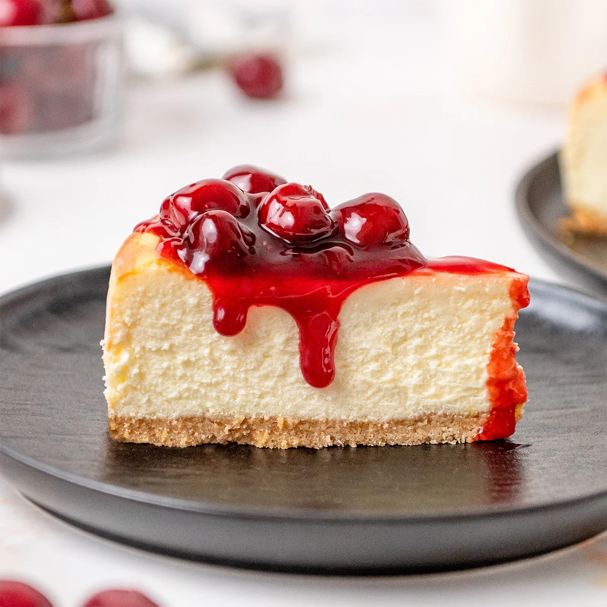

Home
Cherry Cheesecake

Description
This no-bake cherry cheesecake has a graham cracker crust and a light and creamy filling. Top with a can of cherry pie filling for a delicious easy dessert
This is my go-to cake for birthdays. Give this a try!
Ingredients
- 1 1/4 cups graham cracker crumbs
- 1/4 cup unsalted butter, melted
- 8 ounce cream cheese, softened
- 1 cup condensed milk
- 1 teaspoon vanilla extract
- 1 cup heavy whipping cream
- 12.5 ounce can cherry pie filling (or other filling of your choice)
Steps
- Mix graham cracker crumbs and butter in a bowl until well incorporated and crumbly. Press mixture into a 9-inch pie plate, going up the sides
- Beat cream cheese, condensed milk and vanilla in a bowl with an electric mixer until smooth and spreadable
- Beat cream in a bowl with an mix until soft peaks form. Fold into cream cheese mixture until smooth
- Pour filling into the prepared crust, and smooth the top with a spatula. Refrigerate until firm, about 2 to 3 hours
- Spread cherry pie filling over the chilled cheesecake. Serve immediately or refrigerate until serving
- Enjoy!